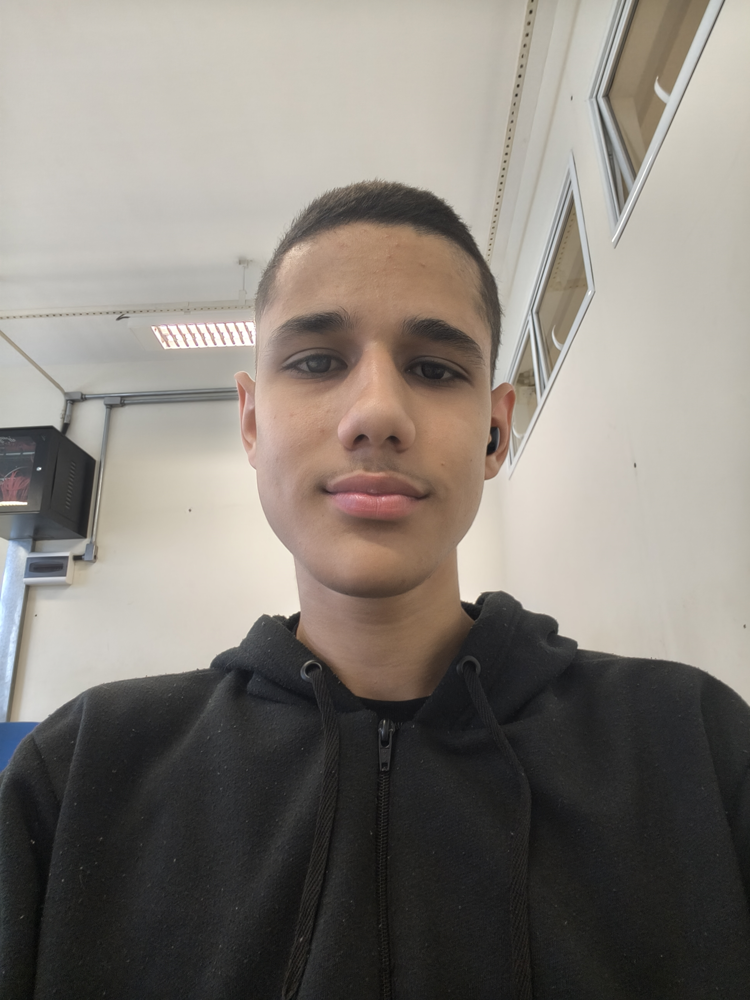
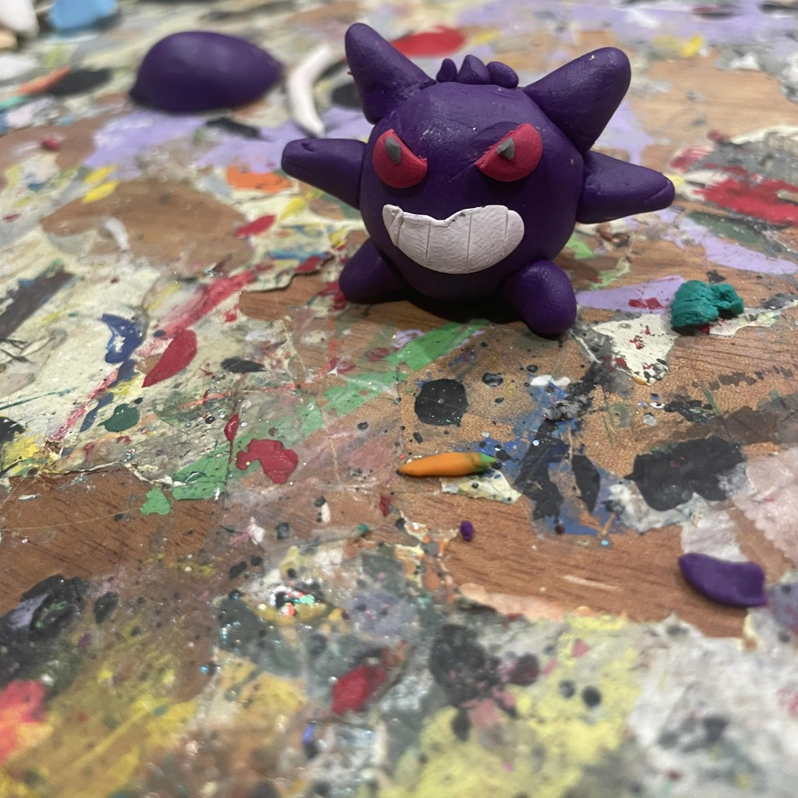

Estudante de Desenvolvimento de Software Multiplataforma - FATEC
Me chamo Ryan, tenho 18 anos e estou cursando Desenvolvimento de Software Multiplataforma na FATEC. Conclui o curso técnico no IFSP de Salto com sucesso apresentando um projeto de jogo 2d como TCC.
Meu maior sonho na área de tecnologia é me tornar um Game Dev indie de sucesso, por isso atualmente trabalho em um projeto inicialmente concebido para ser jogado de forma simples no papel nas horas vagas do trabalho (mercado), mas que evoluiu para algo que eu achei que seria interessante se tornar um projeto de jogo para eu poder treinar e, caso fique bom, publicar. O projeto atualmente se encontra em uma fase muito inicial, mas possui planejamento para crescer gradualmente.
Assim que terminar o curso na FATEC, pretendo me dedicar muito para entrar na PUC de Campinas e cursar Jogos Digitais, para que Meu sonho de Game Dev indie fique cada vez mais próximo até o dia em que se tornará realidade.
E-mail: ryandsilva31.19@gmail.com
Perfil do GitHub: github.com/ryandsilva11
Repositório do curso (Pessoal): github.com/ryandsilva11/Fatec.git